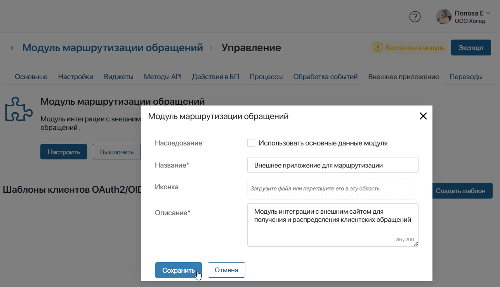
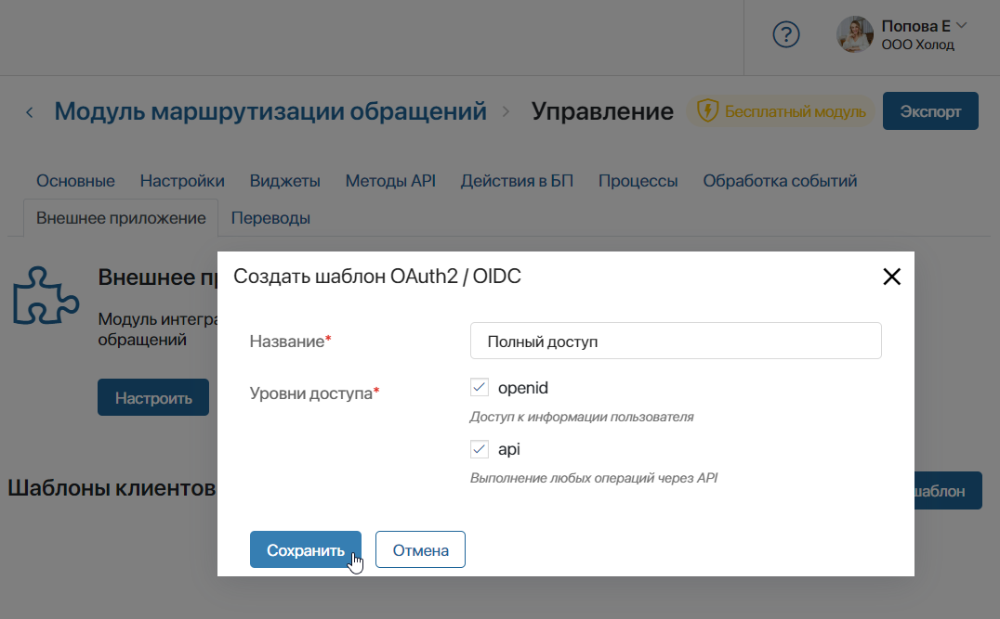
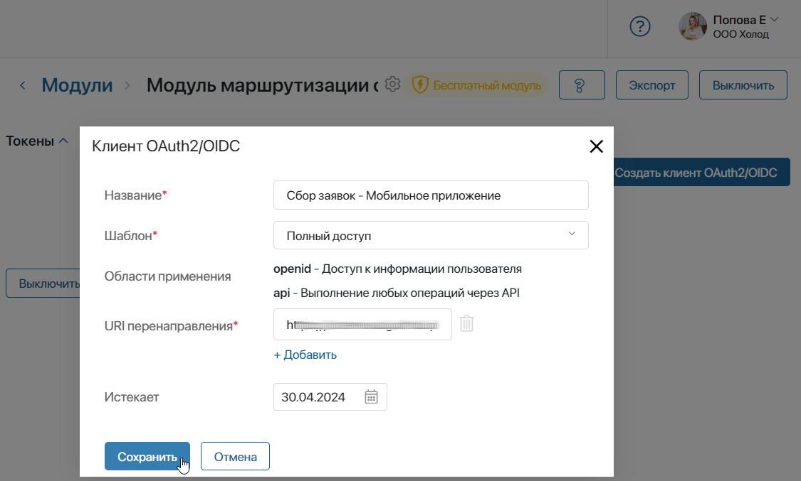
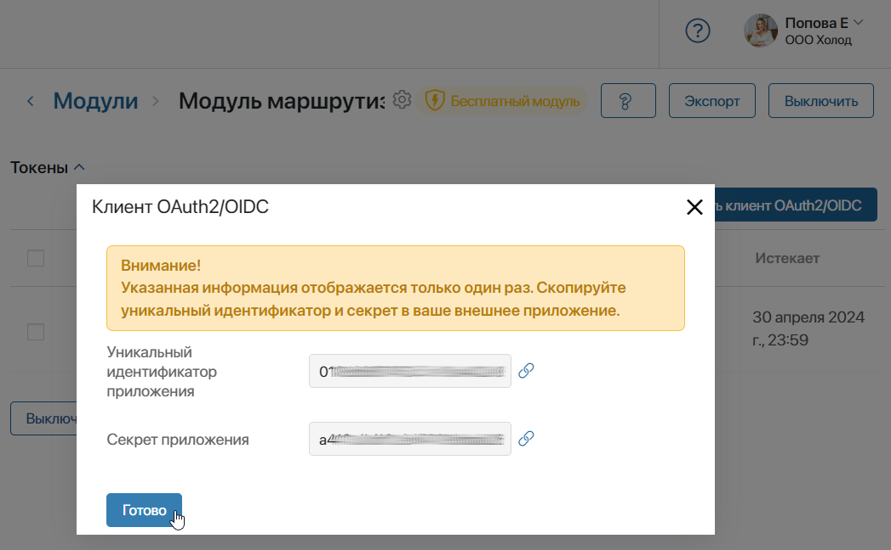

В рамках модуля можно подключить внешнее приложение. Оно позволяет разрешить доступ сторонним сервисам к защищённым ресурсам ELMA365 по протоколу авторизации OAuth2.
Предоставить доступ к данным из ELMA365 можно компьютерным программам, мобильным приложениям, веб‑сервисам и т. д. Для этого на стороне ELMA365 в модуле создаётся внешнее приложение, при его настройке подключается сторонний сервис и определяется его уровень доступа.
После подключения данные из ELMA365 могут служить способом аутентификации на стороннем сервисе, а также источником для обращения через Web API.
начало внимание
Создавать и настраивать внешнее приложение могут только администраторы системы.
конец внимание
Общий принцип работы внешнего приложения
Внешнее приложение осуществляет работу по протоколу авторизации OAuth2 следующим образом:
- На стороне ELMA365 в модуле включается внешнее приложение и добавляется шаблон клиента OAuth2/OIDC, по которому определяется предоставляемый уровень доступа.
- Создаётся клиент OAuth2/OIDC, т. е. указываются данные стороннего сервиса, которому разрешается доступ к ресурсам ELMA365.
Сервис нужно разработать самостоятельно, реализовав в нём клиентскую часть протокола OAuth2. Технические спецификации и стандарты работы протокола OAuth2 читайте в документации RFC.
- В стороннем сервисе осуществляется подключение к ELMA365 по протоколу OAuth2. Соединение выполняется c помощью уникального идентификатора и секрета внешнего приложения, полученных при создании клиента.
- После установки связи пользователь разрешает стороннему сервису доступ с уровнем, указанным в настройках внешнего приложения, через свой аккаунт в ELMA365.
- Генерируется код авторизации и передаётся стороннему сервису. По полученному коду авторизации создаются токен доступа и токен обновления.
- В стороннем сервисе по токену доступа составляются и выполняются запросы на получение ресурсов ELMA365. Токен обновления применяется для генерации нового токена доступа в случае истечения срока его годности.
- Пользователь может проверить список подключений и разорвать соединение в своём профиле.
Включить внешнее приложение и создать шаблон доступа
Внешнее приложение подключается на стороне ELMA365 в модуле и служит способом интеграции платформы и стороннего сервиса. Соединение ELMA365 со сторонним сервисом осуществляется по протоколу OAuth2.
Для каждого пользовательского модуля можно создать одно внешнее приложение. При этом через внешнее приложение в модуле можно подключить несколько сервисов.
При настройке внешнего приложения создаётся Шаблон клиента OAuth2/OIDC. В нём указывается уровень доступа для стороннего сервиса. Можно предоставить доступ к данным пользователя, Web API или выбрать оба варианта.
Созданный шаблон выбирается при подключении стороннего сервиса. Если несколько сервисов подключаются к одному внешнему приложению, вы можете использовать один настроенный шаблон для предоставления одинакового уровня доступа.
Для настройки внешнего приложения выполните следующие действия:
- Перейдите в раздел Администрирование > Модули и выберите созданный пользовательский модуль.
- На странице модуля нажмите Управление и перейдите на вкладку Внешнее приложение.
- На открывшейся странице выберите Включить. Создастся внешнее приложение, через которое будет осуществляться подключение стороннего сервиса.
- Название внешнего приложения можно отредактировать. Детали используются для идентификации внешнего приложения, когда пользователь разрешает доступ стороннему сервису на выполнение действий от его аккаунта.
Для изменения названия нажмите Настроить. В открывшемся окне в поле Наследование снимите флажок с опции Использовать основные данные модуля и задайте название, описание и иконку для внешнего приложения. Сохраните настройки.

- После включения внешнего приложения на странице появится блок Шаблоны клиентов OAuth2/OIDC. Нажмите + Создать шаблон и задайте уровень доступа для подключаемых сторонних сервисов:

- Название* — укажите название, которое будет отображаться в списке созданных шаблонов при подключении стороннего сервиса;
- Уровни доступа* — определите, к каким ресурсам ELMA365 предоставляется доступ стороннему сервису после его подключения:
- openid — доступ к данным пользователя, который разрешает подключение сервиса к ELMA365. Доступ необходим для выполнения протокола OpenID. Включает информацию об идентификаторе, компании и email. Например, через внешнее приложение с таким уровнем доступа можно запрашивать адреса электронной почты и синхронизировать учётные записи из ELMA365 с аккаунтами пользователей в стороннем сервисе;
- api — доступ к выполнению любых операций через WebAPI. Например, через внешнее приложение можно передавать запросы с стороннего сайта и создавать элементы приложений в ELMA365.
- Сохраните шаблон клиента.
Важно: при создании шаблона клиента OAuth2/OIDC продумайте, каким образом будет использоваться настроенное внешнее приложение. В зависимости от этого выберите необходимые уровни доступа. При эксплуатации подключённого стороннего сервиса пользователи не смогут самостоятельно изменить набор предоставленных уровней доступа.
Создать клиента OAuth2/OIDC и подключить его к внешнему приложению
После настройки внешнего приложения и шаблона клиента OAuth2/OIDC необходимо указать данные стороннего сервиса, которому разрешается доступ к ресурсам ELMA365.
Чтобы подключить сторонний сервис, выполните следующие действия:
- Перейдите на главную страницу пользовательского модуля, для которого настроено внешнее приложение, и включите модуль.
- Разверните блок Токены, который появится на главной странице модуля.
- Нажмите кнопку + Создать клиент OAuth/OIDC и заполните данные о подключаемом стороннем сервисе:

- Название* — введите название подключаемого стороннего сервиса;
- Шаблон* — выберите любой шаблон клиента OAuth2/OIDC, созданный для внешнего приложения в модуле. С помощью указанного шаблона вы определяете, к каким ресурсам ELMA365 сторонний сервис будет иметь доступ;
- Области применения — данные уровней доступа из выбранного вами шаблона клиента OAuth2/OIDC. Показывается для информации;
- URI перенаправления* — укажите URL стороннего сервиса, по которому код авторизации из ELMA365 будет возвращаться в сервис. Доступна возможность внести несколько URI перенаправления. Для этого нажмите + Добавить и заполните поле;
- Истекает — отметьте срок действия токенов, по которым выполняется соединение стороннего сервиса и ELMA365. По истечении этого периода работа с сервисом прекращается. Вы сможете создать клиента OAuth2/OIDC повторно и выпустить новые токены.
- Сохраните настройки.
- Появится окно с сгенерированными данными внешнего приложения модуля, которые понадобятся для соединения с добавленным клиентом OAuth2/OIDC.
Окно показывается только один раз. Посмотреть эти данные повторно нельзя. Скопируйте и сохраните Уникальный идентификатор приложения и Секрет приложения и нажмите Готово.

Настройки на стороне ELMA365 завершены. Теперь необходимо установить соединение с ELMA365 в стороннем сервисе.
Подключить сторонний сервис к ELMA365 по протоколу OAuth2
Подключение выполняется в стороннем сервисе по протоколу OAuth2 любым способом, который зависит от типа сервиса, набора применяемых инструментов, наличия готовых библиотек с решениями и действующих норм безопасности.
Приведём описание одного из возможных способов установки соединения стороннего сервиса и ELMA365:
- В стороннем сервисе сохраняются Уникальный идентификатор приложения и Секрет приложения, полученные при создании клиента OAuth2/OIDC в ELMA365. Данные следует указывать в коде не в явном виде, поскольку это нарушает требования безопасности и не позволяет их оперативно изменять.
- В стороннем сервисе реализуется перенаправление пользователя на страницу ELMA365. На этой странице пользователь разрешает доступ сервису к ресурсам ELMA365 при запуске передачи данных.
Способ реализации перенаправления:
<URL-адрес_ELMA365>/api/o/oauth/v2/authorize/client_id=<Уникальный_идентификатор_приложения>&redirect_uri=<Обратная_ссылка>&scope=<Запрашиваемый_уровень_доступа>&response_type=code&response_mode=query&state=<Ключ_защиты>
Где:
- <URL-адрес_ELMA365> — путь до сервера ELMA365, где включено внешнее приложение в модуле и добавлен клиент OAuth2/OIDC;
- <Уникальный_идентификатор_приложения> — значение идентификатора, полученное при создании клиента OAuth2/OIDC в ELMA365;
- <Обратная_ссылка> — ссылка обратного перехода в сторонний сервис после того, как пользователь предоставил разрешение доступа к ресурсам ELMA365;
- <Запрашиваемый_уровень_доступа> — название запрашиваемого уровня доступа, указанного в шаблоне клиента OAuth2/OIDC: api или openid. Если в шаблоне настроено несколько уровней доступа, прописывается каждый из них;
- <Ключ_защиты> — верификационный ключ защиты, который представляет собой произвольное строковое значение.
Для пользователя страница разрешения доступа стороннему сервису может выглядеть следующим образом:

После разрешения доступа должен выполняться следующий порядок действий:
- по пути из значения <Обратная_ссылка> сторонний сервис принимает приходящие данные;
- из поля code, приходящего в ответе, извлекается код авторизации. С его помощью выполняется получение токена доступа и токена обновления.
- Для выполнения этих действий необходимо:
- составить скрипт, который отправляет в ELMA365 запрос POST:
<URL-адрес_ELMA365>/api/o/oauth/v2/token
- в заголовок добавить значение:
Content-Type:application/x-www-form-urlencoded.
- в теле передать:
grant_type=authorization_code&code=<Код_авторизации>&client_id=<Уникальный_идентификатор_приложения>&client_secret=<Секрет_приложения>&redirect_uri=<Обратная_ссылка>
Где:
- <Код_авторизации> — код авторизации, полученный в предыдущем действии;
- <Уникальный_идентификатор_приложения> — значение идентификатора внешнего приложения из ELMA365;
- <Секрет_приложения> — значение секрета внешнего приложения из ELMA365;
- <Обратная_ссылка> — ссылка обратного перехода в сторонний сервис.
- Полученный json-ответ содержит:
- в поле access_token — токен доступа;
- в поле refresh_token — токен обновления;
- в поле id_token — данные о пользователе в виде строки JSON Web Token (JWT). Возвращается, если указан уровень доступа openid.
- Получив токен доступа, сторонний сервис запрашивает необходимые ресурсы в ELMA365 по реализованному для этого интерфейсу.
По истечении срока действия токена доступа сторонний сервис отправляет запрос, который содержит токен обновления, для получения нового токена доступа.
- Для обновления токенов необходимо:
- реализовать отправку в ELMA365 запроса
POST:
<URL-адрес_ELMA365>/api/o/oauth/v2/token
- в заголовок добавить значение:
Content-Type:application/x-www-form-urlencoded
- в теле передать:
grant_type=refresh_token&refresh_token=<Токен_обновления>&client_id=<Уникальный_идентификатор_приложения>&client_secret=<Секрет_приложения>
Где:
- <Токен_обновления> — токен обновления, полученный вместе с токеном доступа;
- <Уникальный_идентификатор_приложения> — значение идентификатора внешнего приложения из ELMA365, полученный ранее в секретах.
- <Секрет_приложения> — значение секрета внешнего приложения из ELMA365.
Полученный json-ответ будет содержать: в поле access_token новый токен доступа, в поле refresh_token новый токен обновления.
Особенности передачи данных
Ознакомьтесь с особенностями передачи данных при различных уровнях доступа стороннего сервиса к ресурсам ELMA365:
- доступ к Web API — при выполнении запросов используется токен доступа, полученный для уровня api. Подробнее о принципе использования токена читайте в справке по публичному API ELMA365;
- доступ к данным пользователя — запросы осуществляются по токену доступа уровня openid. В поле id_token передаются сериализованные данные по стандарту JSON Web Token (JWT), содержащие информацию о пользователе: идентификатор, его электронный адрес и название компании. Для декодирования токена можно воспользоваться готовыми решениями для работы с JWT или самостоятельно реализовать алгоритм разбора.
Срок действия токенов подключения
Срок действия кода авторизации и токенов доступа и обновления ограничен:
- код авторизации — срок действия для одного запроса 10 минут. Он используется единожды для получения других токенов. После этого код считается недействительным, дальнейшие запросы с его использованием отклоняются;
- токен доступа — срок действия 10 минут. Токен позволяет выполнять несколько запросов в течение этого времени. По истечении срока действия он будет недоступен. Новый токен доступа запрашивается с помощью токена обновления;
- токен обновления — срок действия 14 дней. По истечении этого времени необходимо получить новые токены доступа и обновления. Для этого пользователь должен запустить процесс авторизации повторно и разрешить доступ стороннему сервису к ELMA365.
Посмотреть список выданных разрешений
Если в стороннем сервисе реализовано соединение с ELMA365, пользователь может запустить передачу данных. После этого он перенаправляется на страницу разрешения доступа сервису к ресурсам ELMA365.
Все выданные разрешения и установленные соединения фиксируются в ELMA365. Пользователь может просмотреть список предоставленных доступов и отозвать их в настройках своего профиля, на вкладке Внешние приложения.
Подробнее об этом читайте в статье «Настройки профиля пользователя».